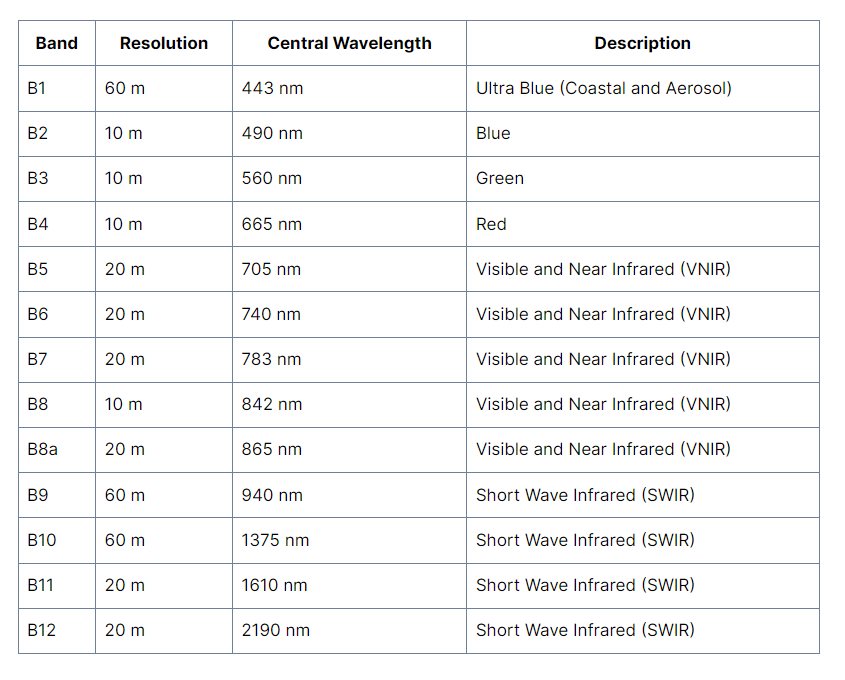
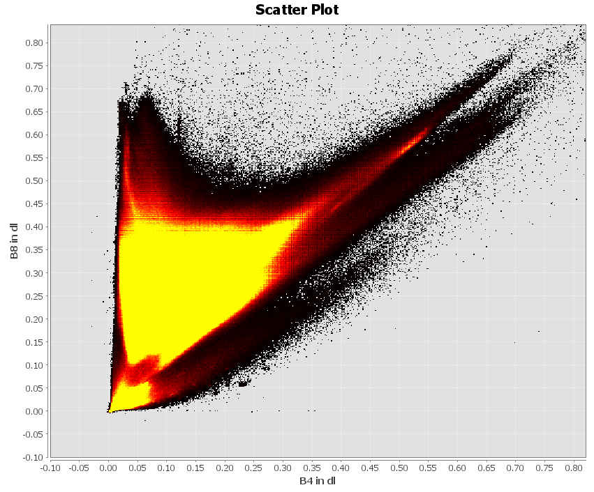
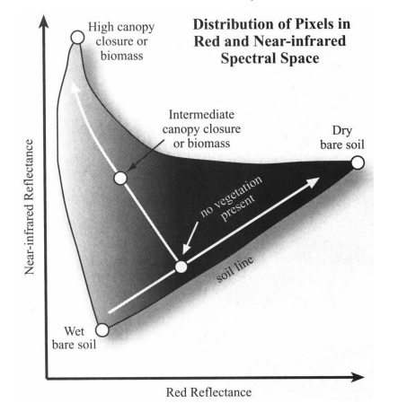
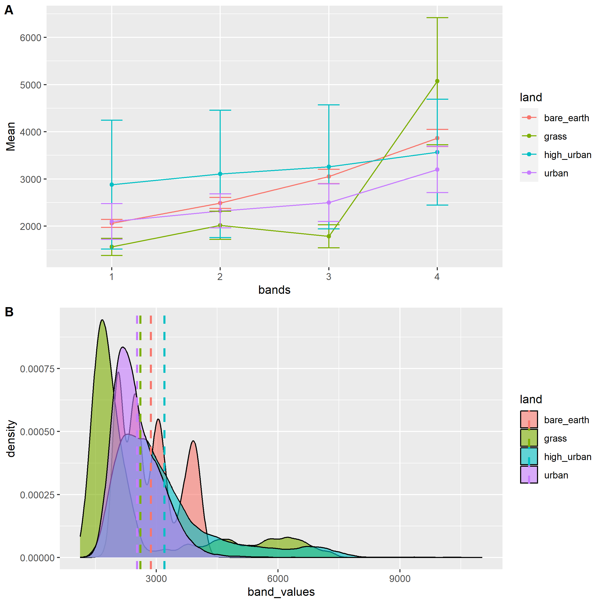
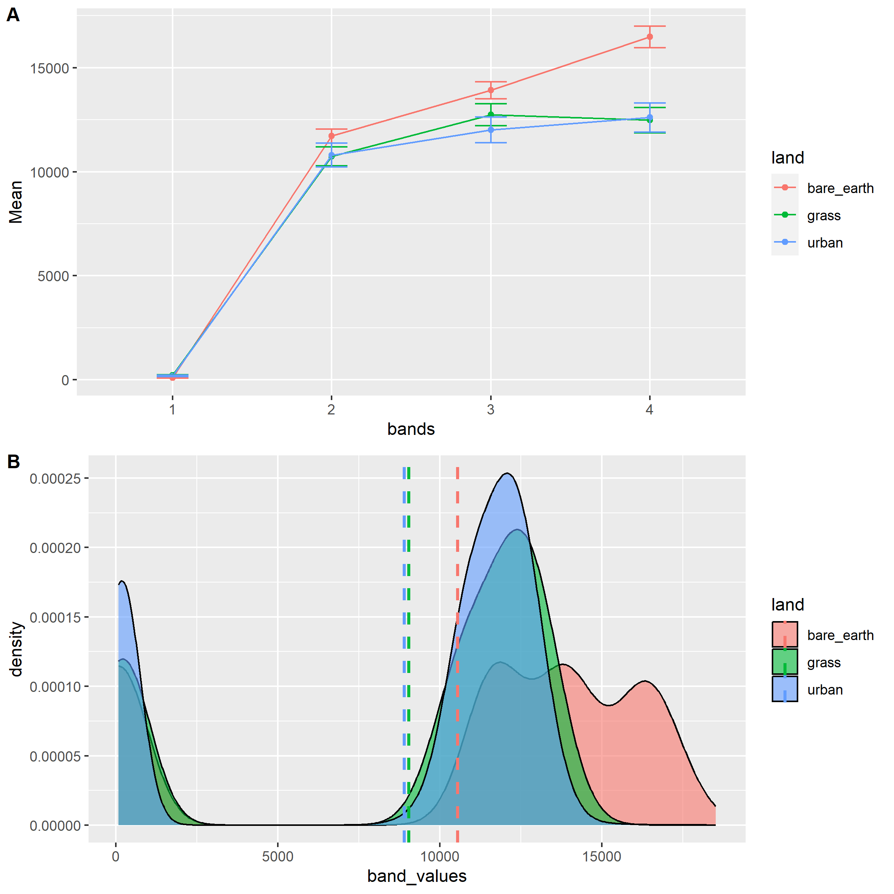

1 Week 1: Introduction to Remote Sensing
1.1 Learning Objectives
The learning objectives of both the lecture and practical are:
Understand the science behind remote sensors and how satellite imagery is obtained
Understand how remotely sensed data work
Source, load and articulate the differences between Landsat and Sentinel data
Undertake basic raster image statistics and processing
Evaluate the (dis)advantages of each type of software you have used
Pull out and statistically compare spectral signatures
1.2 Summary of key concepts
1.2.1 Types of sensors
There are 2 main types of sensors, passive and active sensors. The key difference is that passive sensors (e.g. cameras, satellite sensors) usually detect reflected energy from the Sun while active sensors (e.g. LiDAR, radar, X-Ray) actively emit electromagnetic (EM) waves and detected the reflected waves.
This difference will be useful as the usefulness of the data from different types of sensors will be affected. Passive sensors which rely on reflected energy are thus dependent on the Sun, meaning that the time and day the image is captured will affect the imagery’s usefulness, as well as if there’s presence of cloud cover as clouds will be captured too. This may render the images less useful and users have to use images from another recorded day. Active sensors are more able to bypass clouds and this means that their recorded data is usually not affected by cloud cover and more useful. This also ties into the scientific concept of EM waves, as active sensors record data from a wider range of the EM spectrum compared to passive sensors, hence it can “see” through clouds and other atmospheric conditions.
1.2.2 Data resolutions
The 4 types of resolutions are:
Spatial: Size of the raster grid per pixel
Spectral: Number of bands it records data in
Temporal: Frequency of revisiting the site
Radiometric: Differences in light or reflectance
1.3 Practical
The practical gave me the opportunity to explore the differences between Sentinel and Landsat data, as well as go through the practical process of searching for and downloading the relevant datasets. While I am slightly clearer on the general process, I am still perplexed by the vast options available such as choosing platforms, product types, and what is the best practice for choosing relevant imagery for different purposes.
When exploring the Sentinel data it was helpful to see the various bands and that solidified my understanding of spectral bands practically.
1.3.1 Colour composites
Colour composites are a way of manipulating the way rasters are visualised (not actually modifying the raster data) so that we can focus on different aspects. The RGB image allows us to see the raster data in a way that is intuitive. There are other composites (band combinations) that are useful such as:
False colour (Color infrared) composite: Emphasizes vegetation health, with denser vegetation appearing red while urban areas appear white
- This is because vegetation absorbs red
Atmospheric penetration composite: does not use visible bands so as to not be affected by atmospheric particles
- Vegetation appears blue, urban area appears white, gray cyan or purple.
Shortwave infrared composite: Used to illustrate vegetation in different shades of green (differing densities) and brown areas represent built up or bare soil.
More information can be found on gisgeography
1.3.2 Scatterplot analysis
We were exposed to a really cool method of using scatterplots to statistically analyse images, and created a plot of Band 8 (y-axis) against Band 4 (x-axis).
For this practical, my city of choice was Cape Town, South Africa, which was the city Andy used in the practical instructions. I chose this city as I wanted to focus on familiarising with the layout and tools in SNAP and R and not worry about differences in inputs from Andy’s example.
The scatterplot I obtained is as follows:

This scatterplot can be interpreted as follows:

Source: Remote Sensing 4113
1.3.3 Resampling and Masking
Resampling and Masking are essential processes when dealing with raster data.
Masking is essentially clipping like what we saw in CASA0005, and this can be done with vector data (ESRI Shapefile .shp) in SNAP.
Resampling is the change of spatial resolution (either increasing or decreasing) of the raster dataset. Resampling calculates new pixel values from the original pixel values in the original image.
There are various resampling techniques:
- Nearest Neighbour Resampling
Takes the cell centre from the input raster to determine the closes cell centre of the output
Fastest method because of its simplicity
Ideal for categorical, nominal and ordinal data as it does not alter values
E.g. useful for landcover classification raster grid
- Bilinear Interpolation
Calculates values of a grid based on 4 nearby grids
Assigns the output cell value by taking a weighted average
Useful when working with continuous datasets that do not have distinct boundaries
E.g. useful for noise distance rasters
- Cubic Convolution Interpolation
Similar to bilinear interpolation
Uses 16 nearest cells instead
Long processing time
Usually used for continuous surfaces where much noise exists
- Majority Resampling
Similar to nearest neighbour algorithm
Instead uses the most common values in a filter window
1.3.4 Spectral Signatures
Comparing Landsat and Sentinel products, we only focus on overlapping bands which are B2-4.
In R, we use the shapefiles for each landcover type to extract pixel values from the raster data. This is done using the R package terra. As with CASA0005, it is important to check the CRS of our data. We use terra’s extract function to extract values from our raster, and we repeat this for each landcover type for each image type (Landsat and Sentinel).
Using these values, we plot spectral profiles and density plots to observe differences between landcover types.


Comparing the two outputs, we firstly see that the Landsat plot only has 3 land-cover types as there was no high-urban POI in the Landsat file (due to differences in areas covered). The number of bands plotted is the number of bands that are available in the product. Ideally, we want each landcover type to have a distinct signature at each band so that we can use the raster products for landuse classification.
For both plots, there isn’t much of a distinct spectral signature any of the landcover types, and there is a fair amount of overlap between the landcover types in each band. This means that the raster products used are not the most ideal for landcover classification and more image processing might be needed. It should also be noted that while the Landsat plot looks less differentiated, the mean values on the y-axis are of different scales from the y-axis values for the Sentinel plot.
1.4 Applications of Spectral Signatures
An interesting application of spectral signatures in academic studies is the analysis of the effects of low-backscattering areas of anthropogenic and natural origin on the azimuth autocorrelation function (AACF) using VV-polarised SAR measurements (Corcione et al., 2021). This is of great interest for the marine pollution community to better differentiate between natural low-backscattering or human pollution.
1.5 Reflection
1.5.1 Reflection on data resolutions
Spatial and temporal resolution are concepts that are fairly straightforward to me, as I used to be a mapper with the Singapore Armed Forces, where both types of resolutions were practical considerations when we were digitising areas of interest as it affected how clearly we could observe features and when choosing image files to use.
Spectral resolution was of particular interest to me, as it is the key area that is involved in remote sensing analysis. Objects appear as a certain colour on satellite imagery because that is the wavelength that is reflected, and in the raster data from remote sensors, we can observe values for each wavelength across the EM spectrum. This allows us to create a spectral signature which helps us identify different features or land-covers. This concept is explored more practically later.
Radiometric resolution is the ability of a sensor to detect and record differences in energy, and the higher radiometric resolution a sensor has, the more sensitive it is to differences on the ground. This means the image is of better quality.
1.5.2 POIs
Just a note on POIs, while the practical suggested various land-cover types such as bare earth, water grass, forest and urban, I interpreted these land-cover types according to my prior experience of landcover classification in Singapore. This meant I did not find any suitable POIs for the forest category as it was mostly bare earth, grass and farmland in the tile. Upon clarification with Andy, the main takeaway is that POIs depend on the area chosen and research objectives, and what types of landcover are present. It is up to the researcher to define the classifications.
We can also rely on landcovers classified by other researchers such as Dynamic World and reference their 9 land use and cover types (e.g. trees, grass, shrub & scrub and snow & ice)
1.5.3 Spectral Signatures
Spectral signatures will be key in my remote sensing journey moving forward. Regarding resources for spectral signatures that might be useful in the future, there is the USGS Spectral Library where we can reference the spectral reflectance of various materials for identification purposes. There is also the Awesome Spectral Indices list which keeps track of classical and novel spectral indices for different Remote Sensing applications.